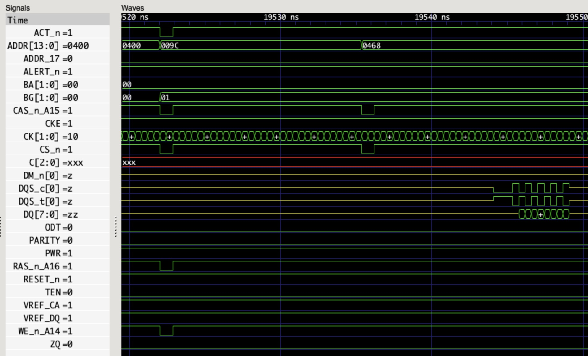
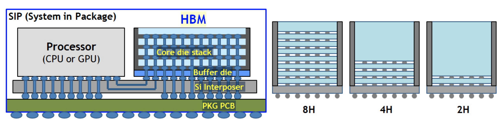

「教学」DRAM 结构和特性¶
本文的内容已经整合到知识库中。
DRAM 是如何组织的¶
DRAM 分成很多层次：Bank Group，Bank，Row，Column，从大到小，容量也是各级别的乘积。
举例子：
- 4 Bank Group
- 4 Bank per Bank Group
- 32,768 Row per Bank
- 1024 Column per Row
- 4 Bits per Column
那么总大小就是 4*4*32768*1024*4=2 Gb。
访问模式¶
DRAM 的访问模式决定了访问内存的实际带宽。对于每次访问，需要这样的操作：
- 用 ACT(Bank Activate) 命令打开某个 Bank Group 下面的某个 Bank 的某个 Row，此时整个 Row 的数据都会复制到 Sense Amplifier 中。这一步叫做 RAS（Row Address Strobe）
- 用 RD(Read)/WR(Write) 命令按照 Column 访问数据。这一步叫做 CAS（Column Address Strobe）。
- 在访问其他 Row 之前，需要用 PRE(Single Bank Precharge) 命令将 Sense Amplifier 中整个 Row 的数据写回 Row 中。
可以看到，如果访问连续的地址，就可以省下 ACT 命令的时间，可以连续的进行 RD/WR 命令操作。
除了显式 PRE 以外，还可以在某次读写之后自动进行 PRE：WRA(Write with Auto-Precharge) 和 RDA(Read with Auto-Precharge)。
总结一下上面提到的六种命令：
- ACT: Bank Activate，激活一个 Row，用于接下来的访问
- PRE: Single Bank Precharge，与 ACT 是逆操作，解除 Row 的激活状态
- RD: Read，读取当前 Row 的某个 Column 数据
- RDA: Read with Auto-Precharge，读取后执行 Precharge
- WR: Write，写入当前 Row 的某个 Column 数据
- WRA: Write with Auto-Precharge，写入后执行 Precharge
除此之外，还有一些常用命令：
- REF: Refresh，需要定期执行，保证 DRAM 数据不会丢失。
参数¶
DRAM 有很多参数，以服务器上的内存 MTA36ASF2G72PZ-2G3A3 为例子：
- 16GB 容量，DDR4 SDRAM RDIMM
- PC4-2400
- Row address: 64K A[15:0]
- Column address: 1K A[9:0]
- Device bank group address: 4 BG[1:0]
- Device bank address per group: 4 BA[1:0]
- Device configuration: 4Gb (1Gig x 4), 16 banks
- Module rank address: 2 CS_n[1:0]
- Configuration: 2Gig x 72
- Module Bandwidth: 19.2 GB/s=2400 MT/s * 8B/T
- Memory Clock: 0.83ns(1200 MHz)
- Data Rate: 2400 MT/s
- Clock Cycles: CL-nRCD-nRP = 17-17-17
容量：每个 DRAM 颗粒 64K*1K*4*4*4=4Gb，不考虑 ECC，一共有 16*2=32 个这样的颗粒，实际容量是 16 GB。32 个颗粒分为两组，每组 16 个颗粒，两组之间通过 CS_n 片选信号区分。每组 16 个颗粒，每个颗粒 4 位 DQ 数据信号，合并起来就是 64 位，如果考虑 ECC 就是 72 位。
再举一个 FPGA 开发板上内存的例子：MT40A512M16LY-075E，参数如下：
- Data Rate: 2666 MT/s, Clock Frequency: 1333 MHz, tCK=0.750ns=750ps
- Target CL-nRCD-nRP: 18-18-18
- tAA(Internal READ command to first data)=
13.50ns(=18*0.750) - tRCD(ACTIVATE to internal READ or WRITE delay time)=
13.50ns(=18*0.750) - tRP(PRECHARGE command period)=
13.50ns(=18*0.750) - tRAS(ACTIVATE-to-PRECHARGE command period)=32ns
- 512 Meg x 16
- Number of bank groups: 2
- Bank count per group: 4
- Row addressing: 64K
- Column addressing: 1K
- Page size: 2KB=2K*16b
总大小：2*4*64K*1K*16=1GB。这个开发板用了 5 个 DRAM 芯片，只采用了其中的 4.5 个芯片：最后一个芯片只用了 8 位数据，这样就是 4.5*16=72 位的数据线，对应 64 位+ECC。
时序¶
可以看到，上面的 DRAM Datasheet 里提到了三个时序参数：
- CL=17: CAS Latency，从发送读请求到第一个数据的延迟周期数
- RCD=17: ACT to internal read or write delay time，表示从 ACT 到读/写需要的延迟周期数
- RP=17: Row Precharge Time，表示 Precharge 后需要延迟周期数
如果第一次访问一个 Row 中的数据，并且之前没有已经打开的 Row，那么要执行 ACT 和 RD 命令，需要的周期数是 RCD+CL；如果之前已经打开了其他的 Row，那么要执行 PRE，ACT 和 RD 命令，需要的周期数是 RP+RCD+CL。但如果是连续访问，虽然还需要 CL 的延迟，但是可以流水线起来，充分利用 DDR 的带宽。
如果把这个换算到 CPU 角度的内存访问延迟的话，如果每次访问都是最坏情况，那么需要 17+17+17=51 个 DRAM 时钟周期，考虑 DRAM 时钟是 1200MHz，那就是 42.5ns，这个相当于是 DRAM 内部的延迟，实际上测得的是 100ns 左右。
更严格来说，读延迟 READ Latency = AL + CL + PL，其中 AL 和 PL 是可以配置的，CL 是固有的，所以简单可以认为 READ Latency = CL。同理 WRITE Latency = AL + CWL + PL，可以简单认为 WRITE Latency = CWL。CWL 也是可以配置的，不同的 DDR 速率对应不同的 CWL，范围从 1600 MT/s 的 CWL=9 到 3200 MT/s 的 CWL=20，具体见 JESD79-4B 标准的 Table 7 CWL (CAS Write Latency)。
波形¶
用 Micron 提供的 Verilog Model 进行仿真，可以看到如下的波形图：

首先看第一个命令，ACT_n=0, ADDR=0x009C, CAS_n_A15=0, CKE=1->1, CS_n=0, RAS_n_A16=0, WE_n_A14=1，查阅标准可知这是 ACT(Bank Activate) 命令。接着第二个命令，ACT_n=1, ADDR=0x0400, CAS_n_A15=0, CKE=1->1, CS_n=0, RAS_n_A16=1, WE_n_A14=1, A10=1, 这是 RDA(Read with Auto Precharge) 命令。若干个周期后，读取的数据从 DQ 上输出，一共 8 个字节的数据。
刷新¶
DRAM 的一个特点是需要定期刷新。有一个参数 tREFI，表示刷新的时间周期，这个值通常是 7.8us，在温度大于 85 摄氏度时是 3.9 us（见 JESD79-4B Table 131）。在刷新之前，所有的 bank 都需要 Precharge 完成并等待 RP 的时间，这时候所有的 Bank 都是空闲的，再执行 REF(Refresh) 命令。等待 tRFC(Refresh Cycle) 时间后，可以继续正常使用。
为了更好的性能，DDR4 标准允许推迟一定次数的刷新，但是要在之后补充，保证平均下来依然满足每过 tREFI 时间至少一次刷新。
地址映射¶
如果研究 DRAM 内存控制器，比如 FPGA 上的 MIG，可以发现它可以配置不同的地址映射方式，例如：
- ROW_COLUMN_BANK
- ROW_BANK_COLUMN
- BANK_ROW_COLUMN
- ROW_COLUMN_LRANK_BANK
- ROW_LRANK_COLUMN_BANK
- ROW_COLUMN_BANK_INTLV
就是将地址的不同部分映射到 DRAM 的几个地址：Row，Column，Bank。可以想象，不同的地址映射方式针对不同的访存模式会有不同的性能。对于连续的内存访问，ROW_COLUMN_BANK 方式是比较适合的，因为连续的访问会分布到不同的 Bank 上，这样性能就会更好。
此外，如果访问会连续命中同一个 Page，那么直接读写即可；反之如果每次读写几乎都不会命中同一个 Page，那么可以设置 Auto Precharge，即读写以后自动 Precharge，减少了下一次访问前因为 Row 不同导致的 PRE 命令。一个思路是在对每个 Page 的最后一次访问采用 Auto Precharge。
传输速率¶
DDR SDRAM 的传输速率计算方式如下：
Memory Speed (MT/s) * 64 (bits/transfer)
例如一个 DDR4-3200 的内存，带宽就是 3200 * 64 = 204.8 Gb/s = 25.6 GB/s。但前面已经看到，除了传输数据，还需要进行很多命令，实际上很难达到 100% 的带宽。然后 CPU 可以连接多个 channel 的 DRAM，再考虑多个 CPU Socket，系统的总带宽就是
Memory Speed (MT/s) * 64 (bits/transfer) * Channels * Sockets
使用 MLC 等工具进行测试，计算实际与理论的比值，我测试得到的大概在 70%-90% 之间。
HBM¶
HBM 相比前面的 DDR SDRAM，它堆叠了多个 DRAM，提供多个 channel 并且提高了位宽。例如 Micron HBM with ECC，堆叠了 4/8 层 DRAM，提供 8 个 channel，每个 channel 的数据宽度是 128 位，以 3200 MT/s 计算，一个 HBM 芯片的传输速率最大是：
3200 (MT/s) * 128 (bits/transfer) * 8 (Channels) = 3276.8 Gb/s = 409.6 GB/s
所以一片 HBM 的传输速率就相当于 16 个传统的 DDR SDRAM：8 个 Channel 加双倍的位宽。128 位实际上就是把两片 64-bit DDR SDRAM 并起来了，可以当成一个 128 位的用，也可以在 Pseudo Channel 模式下，当成共享地址和命令信号的两个 DDR SDRAM 用。
Xilinx 的 Virtex Ultrascale Plus HBM FPGA 提供了 1800 (MT/s) * 128 (bits/transfer) * 8 (Channels) = 230.4 GB/s 的带宽，如果用了两片 HBM 就是 460.8 GB/s。暴露给 FPGA 逻辑的是 16 个 256 位的 AXI3 端口，AXI 频率 450 MHz，内存频率 900 MHz。可以看到，每个 AXI3 就对应了一个 HBM 的 pseudo channel。每个 pseudo channel 是 64 位，但是 AXI 端口是 256 位：在速率不变的情况下，从 450MHz 到 900MHz，再加上 DDR，相当于频率翻了四倍，所以位宽要从 64 位翻四倍到 256 位。
当然了，HBM 的高带宽的代价就是引脚数量很多。根据 HBM3 JESD238A，每个 Channel 要 120 个 pin，一共 16 个 channel（HBM2 是 8 channel，每个 channel 128 位；HBM3 是 16 channel，每个 channel 64 位），然后还有其他的 52 个 pin，这些加起来就 1972 个 pin 了。所以一般在 Silicon Interposer 上连接，而不是传统的在 PCB 上走线（图源 A 1.2V 20nm 307GB/s HBM DRAM with At-Speed Wafer-Level I/O Test Scheme and Adaptive Refresh Considering Temperature Distribution）：

所以在 HBM3 标准里，用 Microbump 来描述 HBM 的 pin。
可以理解为把原来插在主板上的内存条，通过堆叠，变成一个 HBM Die，然后紧密地连接到 CPU 中。但是另一方面，密度上去了，价格也更贵了。
A100 显卡 40GB PCIe 版本提供了 1555 GB/s 的内存带宽。根据倍数关系，可以猜测是 5 个 8GB 的 HBM，每个提供 1555 / 5 = 311 GB/s 的带宽，那么时钟频率就是 311 (GB/s) * 8 (bits/byte) / 128 (bits/transfer) / 8 (channels) / 2 (DDR) = 1215 MHz，这与 nvidia-smi -q 看到的结果是一致的。
进一步，A100 80GB PCIe 版本提供了 1935 GB/s 的带宽，按照同样的方法计算，可得时钟频率是 1935 (GB/s) / 5 * 8 (bits/byte) / 128 (bits/transfer) / 8 (channels) / 2(DDR) = 1512 MHz，与 Product Brief 一致。频率的提高是因为从 HBM2 升级到了 HBM2e。
A100 文档中的 Memory bus width 5120 的计算方式也就清楚了：128 (bits/transfer) * 8 (channels) * 5 (stacks) = 5120 (bits)。
H100 SXM5 升级到了 HBM3，内存容量依然是 80GB，但是时钟频率提高，内存带宽是 2619 (MHz) * 2 (DDR) * 128 (bits/transfer) * 8 (channels) * 5 (stacks) / 8 (bits/byte) = 3352 GB/s。
参考文档¶
- Memory systems: Cache, DRAM & Disk
- 译文：DDR4 SDRAM - Understanding the Basics（上）
- 译文：DDR4 SDRAM - Understanding the Basics（下）
- JEDEC STANDARD DDR5 SDRAM JESD79-5
- JEDEC STANDARD DDR4 SDRAM JESD79-4B
- JEDEC STANDARD DDR3 SDRAM JESD79-3E